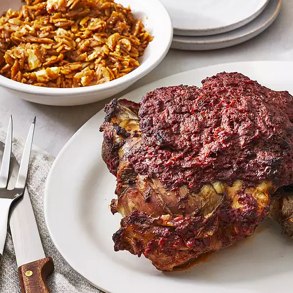

Greek Easter Roast Lamb and Orzo

Greek Easter Roast Lamb and Orzo Recipe
Cumulative recipe from a couple family members. My favorite part of Easter.
Ingredients
- 1 (6 pound) bone-in leg of lamb
- 3 cups mashed tomatoes
- 1 medium onion, finely chopped
- ½ cup olive oil
- 3 teaspoons dried oregano
- 2 teaspoons salt
- 2 teaspoons ground black pepper
- 1 lemon, juiced
- 6 cups water
- 1 pound uncooked orzo pasta
- ½ pound feta cheese
Steps on how to cook
- Preheat the oven to 325 degrees F (165 degrees C).
- Place lamb in a roasting pan. Add mashed tomatoes, onion, olive oil, oregano, salt, pepper, and lemon juice. Combine and make sure lamb is well coated. Cover pan with a lid or aluminum foil.
- Bake in the preheated oven for about 3 hours. Remove from the oven and remove aluminum foil; leave oven on.
- Add water and orzo directly to the roasting pan. Return to the hot oven and bake until pasta is cooked and very little liquid remains, 30 minutes to 1 hour. Add feta cheese and mix until melted and combined.